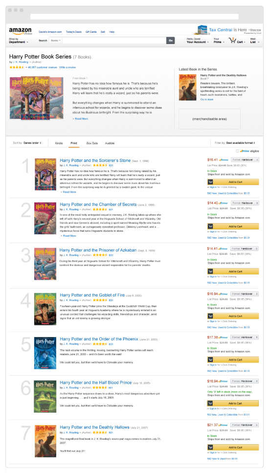

Amazon - Book Series Pages
Summer 2014
In 2014 I spent a number of months contracting with Amazon on the Universal Shopping Experience team. While there I worked on a range of projects that focused on markets like the fashion industry and the book & textbook industry, as well as the general online retail of anything and everything that Amazon is so widely known for. I was able to adapt to a new work environment quickly, diving into projects already well under way. Most of the time I needed to further the effort that a previous designer had started, taking feedback from stakeholders and team members while driving the user experience and design solutions to a place that met the goals of the project and improved the way customers can shop and explore the site. Other times I was involved in more experimental future-thinking projects that involved ideation and pitching of ideas, research and analyzation, and prototyping and testing of the ideas we came up with.
An example of the kind of word I did during my contract is the book series details page. It's a new type of details page that bundles together books in a series and allows the customer to purchase all of them from one page (as opposed to visiting each book's details page in turn to purchase). I was handed this project mid stream and worked closely with the project manager and stakeholders to work through all the details of every aspect of the layout, every UI element on the page, how it would work and why. It represents the kind of high-level thinking coupled with constant attention to detail that I try to bring to every project I work on.
{kind=link}